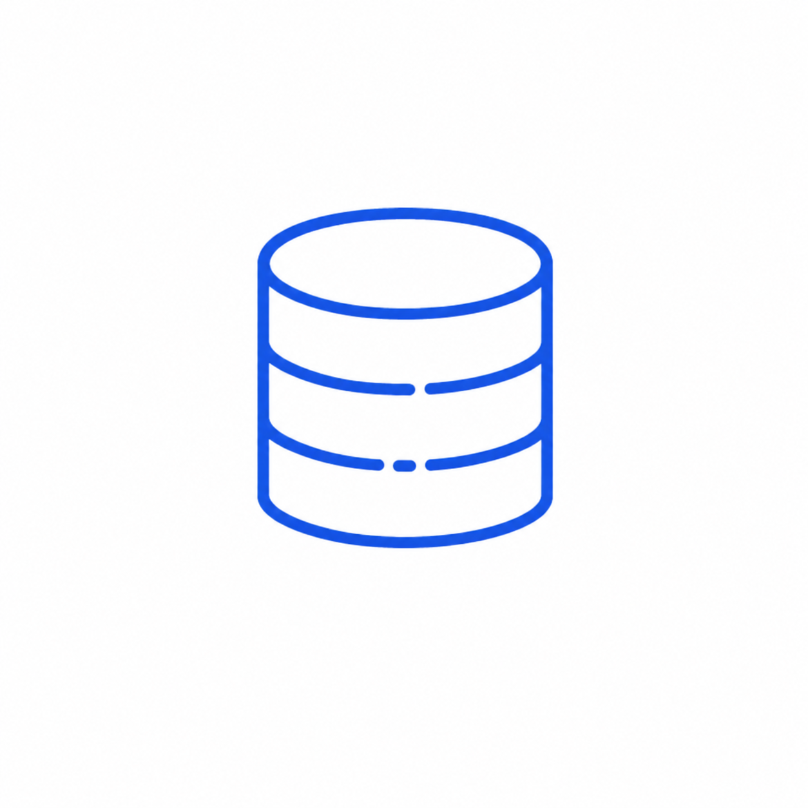
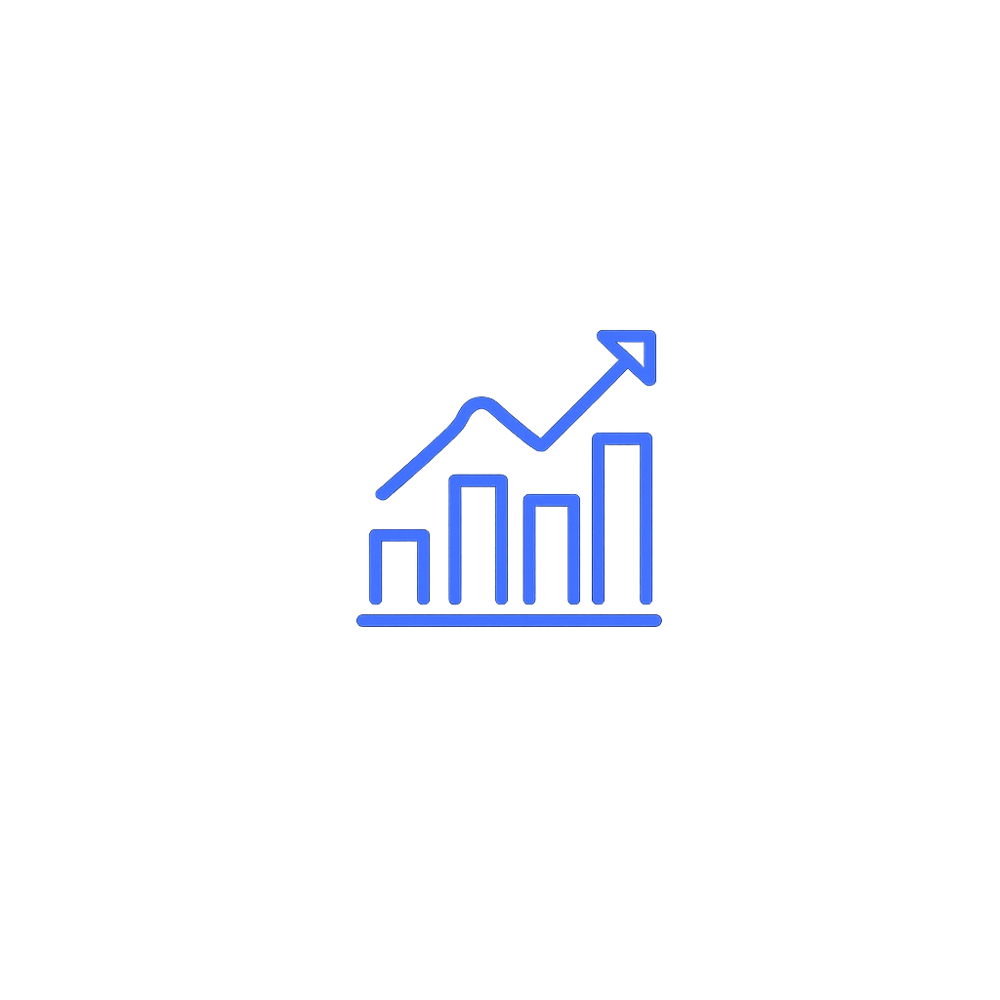

AI導入支援
貴社の課題に合わせた最適なAIソリューションの導入を支援します。
詳しく見る →AI導入から内製化まで一気通貫で支援
AI導入から内製化まで、現場に定着する形で支援。貴社のビジネスを加速させるAIの力を、無理なく使える仕組みに変えます。
業務が属人化しており
特定の人しか対応できない
手作業が多く
生産性が上がらない

データはあるが
活用できていない
AIを導入したいが
何から始めればいいかわからない

導入したが
現場に定着していない
課題を可視化し、AIで解決できる業務を見極めます。
業務・データ・システムを設計し、最適なAI活用プランを構築します。
運用・改善まで支援し、社内で回せる仕組みをつくります。
AI導入を“プロジェクト”で終わらせず、“仕組み”として定着させます。
Before
After
成果：年間コスト 3,000万円 削減
Before
After
成果：対応時間 70% 削減
導入企業数
120社以上
プロジェクト成功率
95%
業務効率化平均
40%向上
年間削減コスト総額
10億円以上
課題やご要望をお聞かせください
現状を分析し、課題を整理します
具体的なご提案とお見積りを提示します
導入後も継続的にサポートします
AI導入の第一歩を、私たちがサポートします。無料相談・資料請求はお気軽にどうぞ。